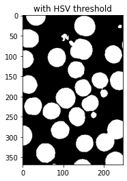
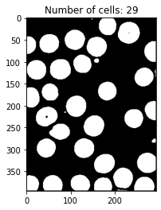
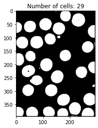

Basic image processing, thresholding, count cells
Contents
Table of Contents
Basic image processing, thresholding, count cells¶
Task 1: Otsu and HSV Thresholding (5 marks)¶
'''
0 / b - background
1 / f - foreground
'''
import numpy as np
import cv2 as cv
from matplotlib import pyplot as plt
import math
def myimshow(img1, img2, t):
fig = plt.figure()
ax1 = fig.add_subplot(2,2,1)
# ax1.imshow(np.random.rand(8, 90), interpolation='nearest')
ax1.set_xlabel("original")
ax1.imshow(cv.cvtColor(img1, cv.COLOR_BGR2RGB))
ax2 = fig.add_subplot(2,2,2)
ax2.set_xlabel(t)
ax2.imshow(cv.cvtColor(img2, cv.COLOR_BGR2RGB))
'''
0 / b - background
1 / f - foreground
use within class variance
'''
def otsu_thresholding(gray):
# Compute histogram and probabilities of each intensity pixel
hist, bins = np.histogram(gray, np.array(range(0, 257))) # ensure size 256, Compute histogram and probabilities of each intensity pixel
hist = cv.calcHist([gray], [0], None, [255], [0,255])
total = gray.shape[0] * gray.shape[1]
within_var = math.inf
thresh = 0
for t in range(len(hist)):
hb, hf = np.split(hist, [t])
if np.sum(hb) == 0 or np.sum(hf) == 0: # avoid divide by zero
continue
w0 = np.sum(hb) / total # Setup initial 𝜔𝑖(0) and μ𝑖(0)
w1 = np.sum(hf) / total
mub = np.sum([i * freq for i, freq in enumerate(hb)]) / np.sum(hb) # mean for discrete random variable
muf = np.sum([(i+len(hb)) * freq for i, freq in enumerate(hf)]) / np.sum(hf) # (i+len(hb)) - add on from end of previous bin
var0 = np.sum([((i - mub)**2) * freq for i, freq in enumerate(hb)]) / np.sum(hb)
var1 = np.sum([(( (i+len(hb)) - muf)**2) * freq for i, freq in enumerate(hf)]) / np.sum(hf)
var = w0 * var0 + w1*var1
if var < within_var: # 4.Desired threshold corresponds to the maximum - lowest sum of weighted variances
within_var = var # minimumn var that distingusih two classes
thresh = t
print("thresh", thresh)
img_desired = gray.copy() # aovid in-place change
img_desired[img_desired > thresh] = 255 # white
img_desired[img_desired < thresh] = 0 # black
# dp below as order matters
img_desired[img_desired==255] = 1
img_desired[img_desired==0] = 255
img_desired[img_desired==1] = 0
return img_desired
gray = cv.imread('c3.jpg',0)
res = otsu_thresholding(gray)
# dp below as order matters
# plt.title("Otsu threshold")
# plt.imshow(cv.cvtColor(res, cv.COLOR_BGR2RGB))
myimshow(gray, res, "Otsu threshold")
thresh 202

hsv¶
H = (0, 180)
S = (40, 255)
V = (0, 255)
# For HSV, hue range is [0,179], saturation range is [0,255], and value range is [0,255].
img = cv.imread('c3.jpg')
img_hsv = cv.cvtColor(img, cv.COLOR_BGR2HSV).copy()
# plt.imshow(img_hsv)
# plt.show()
# based on above img, compared with the color space cylindar of hsv value, saturation is what differentiate the background and the fore
H = img_hsv[:,:,0] # where hsv is 3 channel (list of list of list), so go down twice [:,:hsv here] , for grayscale, it is [:,here]
S = img_hsv[:,:,1]
V = img_hsv[:,:,2]
mask = (S < 40) # e.g. (S < 40) & (H > 1)
img_hsv[mask] = 0
img_hsv[S >=40] = 255
plt.title("with HSV threshold")
plt.imshow(img_hsv)
plt.show()

Task 2: Counting the number of cells (5 marks)¶
median filter¶
'''
@definition - find all neghtbour and itself within kernel size and change to that median value
ignore the outer pixels depends on the kernel size
'''
def median_filter(img, window_width, window_height):
# asusme gray scale
height, width = img.shape
window = [0 for i in range(window_width * window_height)]
res = np.zeros((height, width), dtype = 'uint8')
expandx = int(window_width / 2)
expandy = int(window_height / 2)
for x in range(expandx, width - expandx):
for y in range(expandy, height - expandy):
i = 0
for xw in range(window_width):
for yw in range(window_height):
window[i] = img[y + yw - expandy][x + xw - expandx]
i += 1
window.sort()
res[y][x] = window[int(window_width * window_height / 2)]
return res
gray = cv.imread('c3.jpg',0)
plt.figure(0)
plt.title("before")
plt.imshow(cv.cvtColor(gray, cv.COLOR_BGR2RGB))
img_medianf = median_filter(gray, 3, 3)
plt.figure(1)
plt.title("with median filter")
plt.imshow(cv.cvtColor(img_medianf, cv.COLOR_BGR2RGB))
<matplotlib.image.AxesImage at 0x27ca21f0940>
two pass connected components¶
'''
0 - black: foreground
255 - white: background
'''
def is_background(pixel):
return pixel == 0
'''
4-neighbourhood up, down, left, right
-1 if not labeled / background
-2 if idx out of bound - no neighbour
Consider two pixels to be adjacent if they share the same colour / intensity and each belongs to the other’s four-neighbourhood
@return list of labels
'''
def get_neighbours(labels, r, c, pixel, img):
not_exist = 0 # invalid position
rows = labels.shape[0]
cols = labels.shape[1]
up = down = left = right = not_exist
if r - 1 >= 0 and img[r-1][c] == pixel:
up = labels[r-1][c] # neighbor elements whose labels are not assigned yet are ignored
if r + 1 < rows and img[r+1][c] == pixel:
down = labels[r+1][c]
if c - 1 >= 0 and img[r][c-1] == pixel:
left = labels[r][c-1]
if c + 1 < cols and img[r][c+1] == pixel:
right = labels[r][c+1]
if up == down == right == left == not_exist: # no neighbou
return np.array([])
# if same intensity
return np.array([up, down, right, left])
'''
add to eq_sets if elements in inserted list not appear in other list in eq_set
otherwise, union two list with no duplicate
@ls list of labels e.g [1,2,3]
@eq_sets - list of list of labels
'''
import itertools
def add_to_eq_sets(eq_sets:list, ls:list):
idxes = []
for i, e in enumerate(eq_sets):
# any element from the input list is in the list in eq sets
for l in ls:
if l in e:
idxes.append(i) # find all lists contain element in the input ls
break
if not idxes: # no neighbours
eq_sets.append(ls)
return
# make a merge list
be_append = [eq_sets[i] for i in idxes]
be_append = list(set(itertools.chain(*be_append)))
# remove individual lists from eq_sets
for i in idxes[::-1]: # remove in reverse order to make index persist during deletion
del eq_sets[i]
eq_sets.append(be_append)
'''
find list contains e, return the min of that list
'''
def get_min_labels(e, ls):
for i, l in enumerate(ls):
if e in l:
# return min(l)
return i + 1 # idx of equivalence set [1~ n labels]
import math
from statistics import median
def two_passed_connected_component(img):
rows = img.shape[0]
cols = img.shape[1]
labels = np.zeros((rows, cols)) # store label
eq_set = [] # equivalence sets - list of lists
classes = 1 # start from 1
# first pass
for c in range(cols):
for r in range(rows):
pixel = img[r][c]
if is_background(pixel): # ignore
continue
neighbours = get_neighbours(labels, r,c, pixel, img)
neighbours = list(neighbours[neighbours > 0]) # ignore 0 - not labeled
if not neighbours: # If there are no neighbors, uniquely label the current element and continue
labels[r][c] = classes
classes += 1
continue
labels[r][c] = min(neighbours) # Otherwise, find the neighbor with the smallest label and assign it to the current element
add_to_eq_sets(eq_set, neighbours)
# store area (number of pixels) for each label
areas = [0 for i in range(len(eq_set))]
# second pass
for c in range(cols):
for r in range(rows):
if is_background(img[r][c]): # ignore
continue
# find the list contain the label of current pixel in the eq_sets
# assign the min
lb = get_min_labels(labels[r][c], eq_set)
if not lb or math.isnan(lb): # aviod none type
continue
labels[r][c] = lb
areas[int(lb) - 1] += 1 # -1 starts from 0, label starts from 1
# callobrate
print("median(areas) before nomalised", median(areas))
# normalised - remove obvious small cell, assume any large cell (e.g. 10x larger) are overlapped cell (overlap of two)
normalised_thresh = 0.5 * median(areas) # median with outier (noise)
print("normalised_thresh", normalised_thresh)
normalised_areas = [i for i in areas if i >= normalised_thresh]
min_ara_thresh = 0.65 * median(normalised_areas)
print("min_ara_thresh", min_ara_thresh)
max_area_thresh = 2 * median(normalised_areas) #
print("max_area_thresh", max_area_thresh)
# remove small cells
new_areas = [i for i in normalised_areas if i >= min_ara_thresh]
# double overlap cells
count_cell = 0
for i in new_areas:
if i >= max_area_thresh:
count_cell += 2 # assume max two overlaps
count_cell += 1
print("count_cell", count_cell)
print(sorted(new_areas))
return count_cell
count_labels = two_passed_connected_component(img_binary)
median(areas) before nomalised 848
normalised_thresh 424.0
min_ara_thresh 828.1
max_area_thresh 2548.0
count_cell 29
[836, 848, 873, 959, 1001, 1040, 1061, 1114, 1126, 1150, 1170, 1207, 1209, 1268, 1280, 1300, 1329, 1334, 1350, 1393, 1412, 1453, 1462, 1608, 1632, 1650, 1655, 1758, 1763]
benchmark on four images¶
if load four at the same time, takes about 1min
total_image = 4
for i in range(total_image):
gray = cv.imread(f'c{i+1}.jpg',0)
res = otsu_thresholding(gray)
img_binary = median_filter(res, 3, 3)
count_labels = two_passed_connected_component(img_binary)
plt.figure(i)
plt.title(f"Number of cells: {count_labels}")
plt.imshow(img_binary, cmap='gray', vmin=0, vmax=255)
plt.show()
thresh 202
median(areas) before nomalised 869
normalised_thresh 434.5
min_ara_thresh 854.75
max_area_thresh 2630
count_cell 51
[869, 878, 920, 955, 993, 1020, 1032, 1068, 1073, 1111, 1127, 1139, 1165, 1185, 1206, 1208, 1212, 1220, 1231, 1236, 1254, 1279, 1315, 1336, 1352, 1361, 1392, 1396, 1419, 1423, 1427, 1489, 1496, 1550, 1566, 1582, 1593, 1618, 1636, 1662, 1667, 1798, 1872, 1918, 1935, 1955, 2411, 2591, 2688]
thresh 202
median(areas) before nomalised 327.5
normalised_thresh 163.75
min_ara_thresh 624.0
max_area_thresh 1920.0
count_cell 35
[685, 899, 913, 937, 983, 1016, 1078, 1137, 1142, 1142, 1160, 1197, 1199, 1263, 1271, 1284, 1309, 1314, 1328, 1338, 1342, 1360, 1363, 1372, 1446, 1502, 1518, 1549, 1582, 1596, 1631, 1729, 1734, 1750, 1800]
thresh 202
median(areas) before nomalised 1100
normalised_thresh 550.0
min_ara_thresh 827.125
max_area_thresh 2545.0
count_cell 24
[866, 915, 924, 925, 1100, 1103, 1130, 1188, 1205, 1206, 1246, 1253, 1292, 1311, 1389, 1402, 1432, 1433, 1475, 1530, 1736, 1816, 2008, 2232]
thresh 202
median(areas) before nomalised 848
normalised_thresh 424.0
min_ara_thresh 828.1
max_area_thresh 2548.0
count_cell 29
[836, 848, 873, 959, 1001, 1040, 1061, 1114, 1126, 1150, 1170, 1207, 1209, 1268, 1280, 1300, 1329, 1334, 1350, 1393, 1412, 1453, 1462, 1608, 1632, 1650, 1655, 1758, 1763]
 
